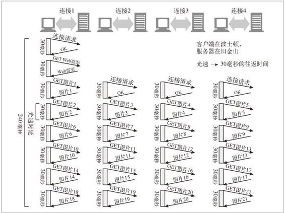

7.4 距离时延
即使带宽不是问题，距离也可能成为问题。每台网络路由器都会增加因特网流量的时延。即使客户端和服务器之间没有太多的路由器，光速自身也会造成显著的时延。
波士顿到旧金山的直线距离大约有 2700 英里。在最好的情况下，以光速传输（186 000 英里 / 秒）的信号可以在大约 15 毫秒内从波士顿传送到旧金山，并在 30 毫秒内完成一个往返。1
1 在实际应用中，信号的传输速度会比光速低一些，因此，距离时延会更加严重。
假设某个 Web 页面中包含了 20 个小图片，都在旧金山的一台服务器上。如果波士顿的一个客户端打开了 4 条到服务器的并行连接，而且保持着连接的活跃状态，光速自身就要耗费大约 1/4 秒（240 毫秒）的下载时间（参见图 7-3）。如果服务器位于（距离旧金山 6700 英里的）东京，时延就会变成 600 毫秒。中等复杂的 Web 页面会带来几秒钟的光速时延。
将缓存放在附近的机房里可以将文件传输距离从数千英里缩短为数十米。

图 7-3 即便使用的是并行的持久连接，光速也会造成显著的时延